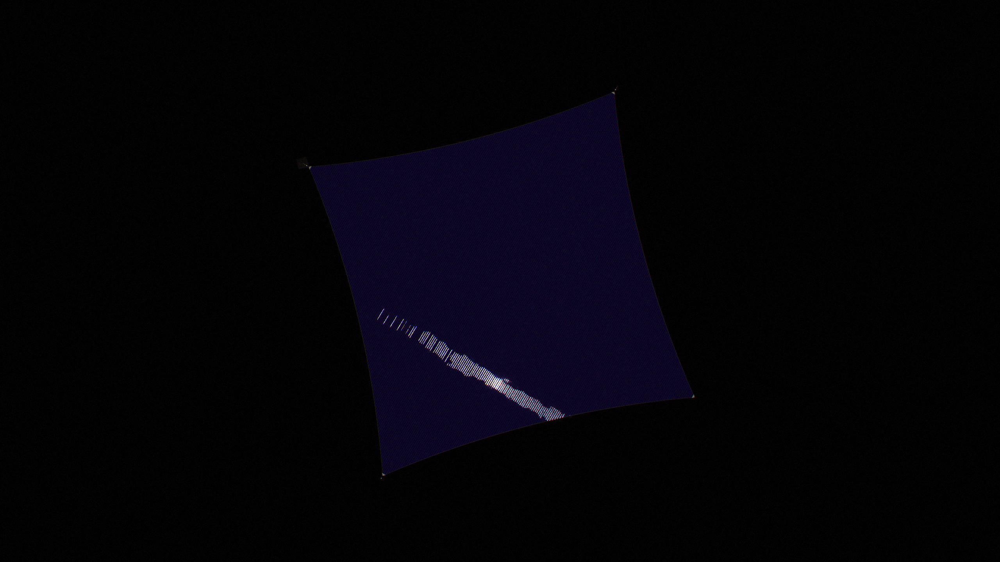

The compute sail
Every satellite in the swarm is the same thing: a square of solar film 279 metres on a side, thinner than a sheet of paper, with a hundred million tiny chips on its back. It is a power station, a radiator and a computer, all in one sheet.
In short
- One sheet does everything. The film turns sunlight into electricity, spends it in chips spread across its back, and radiates the heat from its own surface. There are no pipes, pumps or radiators.
- Heat decides where it can fly. Sunlight alone sets the film’s temperature, and the chips must stay near 85 °C, so a lone sail sits at 0.862 AU from the Sun. In the finished sphere the sails face each other instead of open space, and run much hotter.
- 279 m is a balance. Big enough that the largest job fits on one sheet and the fixed hardware weighs little; small enough to fold into one launch.
- It lasts centuries if it is repaired. Dust punches holes that never grow, the film’s own warmth heals radiation damage, and chip wiring can be made not to wear out. The model rebuilds each sail every 300 years.

What a sail is
Picture a square of dark film the size of ten football pitches, flown point-first like a kite, always facing the Sun. Four thin booms behind it run from a small hub in the middle out to the corners and hold it taut. Four small mirrors at the corners steer it. That is the whole spacecraft.
The film is a silicon solar cell. On its back, one small chip sits in the middle of every 2.5 cm square of cell. Each chip takes the 0.15 W its own square produces, computes with it, and turns it into heat on the spot. Because the chips are spread out as thinly as the sunlight that feeds them, the film around each chip can radiate its heat straight into space. Nothing has to be carried anywhere.
Sails never touch each other. Each is a separate spacecraft that talks to its neighbours by laser. Inside one sail, though, light guided through the film links every chip to every other within a couple of millionths of a second, so the whole sheet works as one computer.
What the film is made of
The film is a stack of six thin layers, about 40 micrometres in all, half the thickness of a human hair. Light comes in through the front; heat leaves through both faces.
Every layer is made from elements Mercury has plenty of: silicon, oxygen, magnesium, aluminium, iron and calcium. That rules out most of the solar cells used in space today. Mercury has too little iodine for perovskite cells and too little indium and germanium for the high-efficiency cells on satellites, so the cell is plain crystalline silicon, made without hydrogen because Mercury has almost none. Such a cell should convert about 21–22% of sunlight in space.
The cell has all its electrical contacts on the back, so nothing on the front casts a shadow. Each 2.5 cm square is wired as its own little power supply at about 1 volt, and nothing on the film ever sees more than 1.2 volts. That matters more than it sounds: solar panels in space can arc and burn when a dust grain strikes a string held at 80 volts or more.
One trick earns a lot. About a quarter of sunlight is at wavelengths too long for silicon to use. Absorbed, it would only heat the film. A coating on the glass reflects it instead, which lets the sail fly closer to the Sun at the same temperature, where each square metre catches 14% more light.
Layer by layer, with masses
| Layer | 2026 reference | Mature film |
|---|---|---|
| Anti-reflection coating (porous silica, titania) | 0.3 g/m² | 0.3 g/m² |
| Cover glass (magnesium aluminosilicate) | 20 µm, 50 g/m² | 8 µm, 20 g/m² |
| Silicon cell, back-contacted | 30 µm, 70 g/m² | 10 µm, 23 g/m² |
| Aluminium contacts and wiring | 4 g/m² | 4 g/m² |
| Insulating layer | 1.1 g/m² | 1.1 g/m² |
| Magnesium heat spreader | 13 µm, 23 g/m² | 13 µm, 23 g/m² |
| Emitter enamel (iron-magnesium-calcium silicate) | 15 µm, 41 g/m² | 6 µm, 16 g/m² |
| Chiplets and their wiring | 2 g/m² | 2 g/m² |
| Film | 191 g/m² | 89 g/m² |
To the eye the front is a very dark navy. It reflects about 0.2% of visible light, most of it from the anti-reflection coating, which leaves a faint magenta-blue sheen. The hinge strips, every 1.63 m, are a slightly lighter satin. From far away a sail is a dark diamond whose only bright parts are its four mirror vanes.
The chips on the back
Why such small chips? Because a thin sheet is bad at carrying heat sideways. A chip has to hand its heat to enough film to radiate it, and the bigger the chip, the farther the heat must travel and the thicker the metal that carries it. The metal needed grows with the square of the chip’s power: 0.09 g of spreader per watt at 0.1 W per chip, 0.94 g at 1 W, 9.4 g at 10 W, more than the whole rest of the sail. At 0.15 W per chip, the die runs only 7–10 °C warmer than the film around it.
So the chip spacing follows the sunlight. On the sail’s own orbit a square metre feeds about 260 W to its chips, enough for one 0.15 W chip every 24 mm. At 0.95 AU, where the sphere is built, the light is weaker and the spacing opens to 26.5 mm. Either way a sail carries about a hundred million chips and 15 MW of computing power, the electricity of a small town.
The chips talk to their four neighbours through wiring in the film. That alone would make a sail a loose patchwork, because a message crossing the sheet hop by hop is slow and costly. So the mature design also lays light guides through the film, which carry a signal across the whole sail in about two microseconds. Each chip also carries one to two gigabytes of memory of a kind that keeps its data without power and shrugs off radiation. Chips in the film covers what this computer can run.

Where a sail can fly
A sail in sunlight warms up until it radiates heat as fast as it absorbs light. What sets that temperature is how much light it absorbs and how freely its two faces radiate. Strikingly, the efficiency of the solar cell plays no part: the electricity is spent in chips on the same sheet, so it comes out as heat from the same surface. A better cell gives more computing at the same temperature.
The temperature then sets the distance. Logic chips work best near 85 °C (Hardware after 2095 explains why), and the chips run about 9 °C above the film. So a lone sail flies where its film settles at 76 °C: 0.862 AU from the Sun, in about 1,830 W of sunlight per square metre. Closer in, the chips would overheat. Farther out, the same film would catch less light.
The sphere does not let each sail choose its distance. Every sail flies at 0.95 AU, for reasons to do with Earth and with how much rock Mercury has (Closing the sphere). While the sphere is sparse, the fronts are switched to radiate poorly in the infrared, so the film runs at 382 K and the chips at about 118 °C. As the sphere closes, it can only shed heat outward, through the sails’ backs, and the film climbs to 419 K, with chips near 155 °C. Hot cells convert less and hot chips spend more energy per operation, so each watt of sunlight then computes about half what it would at 85 °C. That is the price of enclosing the Sun.
sailAt, closedFilmT). Hover for values.The arithmetic
In balance, the sunlight absorbed equals the heat radiated from both faces:
α S = (εfront + εback) σ T⁴
Here α = 0.80 is the share of sunlight absorbed, S the sunlight per square metre, σ the Stefan–Boltzmann constant, and the emissivities (how readily each face radiates, from 0 to 1) are 0.85 for the glass front and 0.90 for the enamel back. At 0.862 AU, S = 1,832 W/m² and T = 349 K. With a dark front (ε = 0.1) at 0.95 AU, T = 382 K. Closed, only the backs radiate: εback σ T⁴ = S ÷ 0.96 at 0.95 AU, which gives 419 K.
Why 279 metres
Three things pull on the size, in different directions.
First, the biggest job a sail is meant to do must fit on one sheet. The design study sized it so that the largest model it trains, using about a hundred million chips, is one unbroken mesh. Split across two sails, a model would run only as fast as the laser link between them, a thousand times slower than the film.
Second, the parts every sail needs whatever its size, the hub, vanes and tensioners, weigh about a third of a tonne. On a small sail that is a large share of the mass; on a big one it hardly counts.
Third, the folded sail must fit one launch. Packed, the 279 m sail is a bundle of 14.4 tonnes about the size of a shipping container.
Later hardware with denser memory could fit one training job on a sail a quarter the size. The other two pulls keep the best size near 279 m anyway, so a sail of the mature era simply holds several jobs at once.
Holding it flat, and turning it
The film is held at a tension of only 0.1 newtons per metre, roughly the weight of a paperclip per metre of edge. That is enough because almost nothing pulls on it. Sunlight pushes on the whole sail with about a third of a newton, and under that push the film bows by less than two hundredths of a degree.
The booms are triangular trusses of thin magnesium tubing, 199 m long and 2.6 m across, weighing 109 kg each. They sit 30 cm behind the film without touching it, and spring reels at the corners keep the tension even. The edges between the corners hang in shallow curves, so the pull spreads evenly and no edge flutters.
Why the sail does not spin
Solar sails are often spun so that rotation keeps them flat. The study rejected it. A spinning sail would have to turn slowly, once every 45 minutes or longer, for its vanes to be able to steer it, and at that rate rotation gives a tenth or less of the tension the booms provide. The film’s edges would then curl over a metre or more, and the 1.63 m fold panels would not lie flat.
A sail turns in two ways. For steady pointing, each corner vane can tilt, which shifts where sunlight pushes and makes a small twisting force. The vanes can push back three times harder than the largest disturbance, a 1% difference in reflectance from one side of the film to the other. For fast turns, a flywheel in the hub does the work.
Fast turns matter in the sphere. Once orbits begin to cross, a sail that passes behind another, or through a window cut for Earth, must turn edge-on to the Sun so that it neither blocks light nor traps its neighbour’s heat. Once edge-on, sunlight no longer pushes on it, so the vanes cannot do the job. A flywheel of about 200 kg flips the 14-tonne reference sail in ten minutes and ends at the speed it started with, so no energy is spent beyond friction. No sail carries any propellant.
The same push of sunlight also moves the orbit. Tilting the whole sail tilts the push, and over months that reshapes the path. That is how the sails of a band hold formation round the Sun: each leans by 3–4°, at a cost of 0.2% of its light (Closing the sphere).
Lasers between sails
A sail talks to other spacecraft through laser terminals on its back: small telescopes on gimbals. The 2026 reference carries 60 of them, each like those Starlink satellites use, sending a fraction of a terabit a second to anything within 3,000 km. Mature hardware needs about a dozen far better ones, each carrying 50–400 terabits a second. Even so, the lasers between sails carry far less than the light guides inside one, and that is what makes the sail, not the swarm, the unit that computes as one machine.
Folding it for launch
The film can be rolled but never creased. All the folding happens along the 243 hinge strips, narrow bands of glass cloth that run across the sail every 1.63 m.
The package leaves the factory on a mass driver, an electric catapult, at 100 g, and a small electric kick stage running on oxygen takes it to its orbit. There the booms extend and carry the rolls outward, which unroll under a brake; the other two booms pull the accordion open; the tensioners take up the slack; the vanes and terminals unfold; and the chips test themselves and start up, region by region.
Damage, wear and repair
Interplanetary dust hits the sail at about 21 km/s. The film is far too thin to stop any of it, so almost every grain makes a hole: about 264,000 holes of a tenth of a millimetre per sail per year, and a hole a centimetre across once every 33 years. What saves the sail is that the holes do not grow. The film is under so little tension that a crack would have to be about a hundred kilometres long before it could spread by itself. A hit kills at most the 2.5 cm square it lands on, one chip and its cell.
All told, a sail loses roughly a tenth of a per cent of its chips a year to dust. It carries 10% spare area, and repair craft patch it in place.
How long can a sail last? Designs of today’s kind give 10–30 years. But the swarm is meant to last for centuries, so the question is what physics allows when repair is part of the plan. The answer is centuries:
| Wear | How fast | What stops it |
|---|---|---|
| Solar wind eroding the glass | About 0.02 nm a year | Nothing needs to: 8 µm of glass lasts about 400,000 years |
| Proton damage in the cells | About 7.5% of output a decade | At 146 °C the film heals the commonest defects as it goes; a patch can be heated to 250–350 °C for an hour to heal the rest |
| Chip wiring wearing out | 25 times faster at 155 °C than at 105 °C | Wiring cut into segments short enough that the metal cannot drift |
| Radiation in the memory | 133–437 krad a decade | Resistive memory tolerates 10–20 Mrad, centuries of dose |
| Dust holes | Up to 1% of the area a year | Crack-stopped film keeps to the low end, about 2% in 300 years, patched in place |
| Going out of date | Only while chips keep improving | By the time the sphere closes, chips have long since stopped improving |
So the model rebuilds each sail every 300 years, recycling 99% of it in orbit, and in between, repair craft heal, patch and swap chips. Why that matters for the size of the swarm is in Taking Mercury apart.
What a sail weighs
| 2026 reference | Mature sail | |
|---|---|---|
| Film | 13,250 kg | 7,050 kg |
| Structure, or spare area | 859 kg structure | +10%: 705 kg |
| Laser terminals | 320 kg | ~80 kg |
| Sail | 14.4 t | 7.8 t |
| Power to the chips | 14.8 MW | 18.1 MW |
| Mass per watt of chips | 0.98 g/W | 0.43 g/W |
Most of the gain comes from the thinner film; the rest from a sail that flies a little closer to the Sun and converts more of what it catches. The whole swarm weighs more per watt than its sails do, about 1.0 g, because it also carries a few concentrated pods, flies its sails a little farther out than their best distance, and keeps some sails idle behind others once orbits begin to cross.
Sources and code
- Design study:
docs/data/design_spec.json, with its scripts indocs/data/design_scripts/. - Architecture studies:
docs/architecture.md,docs/data/architecture_thermal_mass.json,docs/data/architecture_skeptic.json. - Future hardware:
docs/future-tech.md,docs/data/future/*.json; lifetimes:docs/closed-swarm.md,docs/full-swarm.md. - Model:
src/model/hybrid.js(sailAt,closedFilmT,closedFactor), tested intest/hybrid.test.js. Diagrams:notes/figures.js. - Grün, Zook, Fechtig and Giese (1985), the interplanetary meteoroid flux; SPENVIS ballistic-limit equations.
- JAXA and NASA Glenn measurements of impact-induced arcing on solar arrays.
- Thin crystalline silicon efficiency against thickness, arXiv:1505.03985.
- Miller, “Attojoule optoelectronics”, J. Lightwave Technology 35(3), 2017, arXiv:1609.05510.
- Blech (1976), electromigration threshold in short conductors.